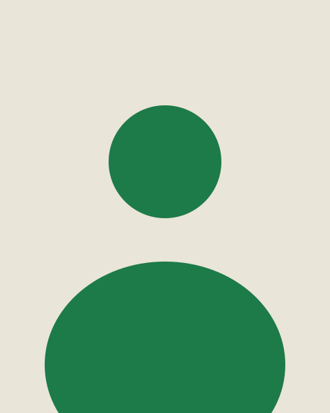
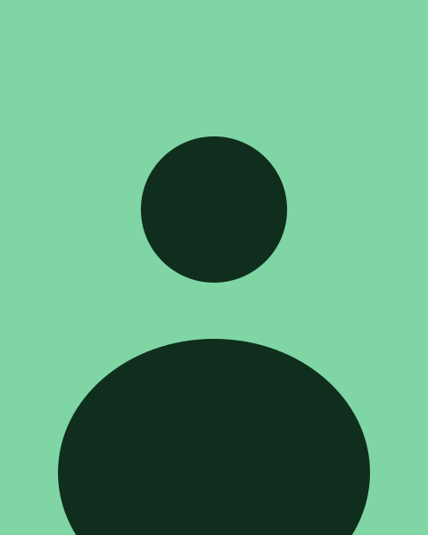
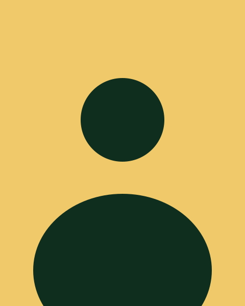
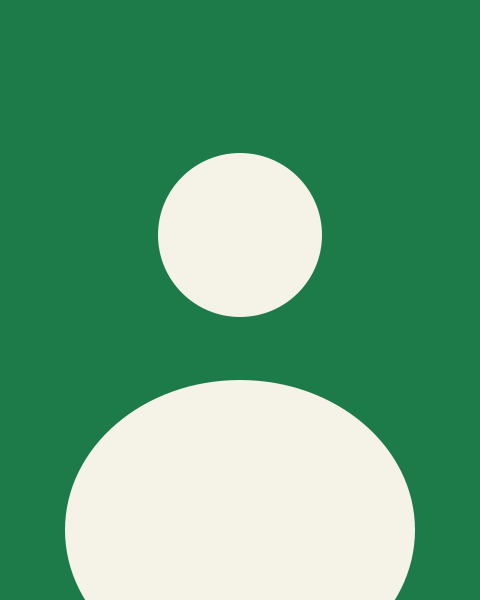
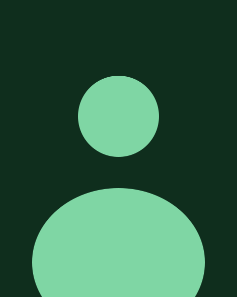
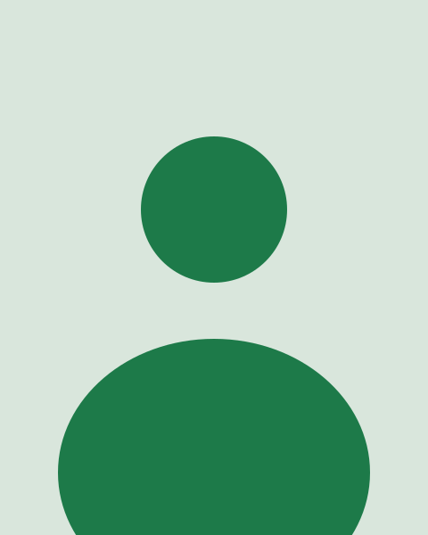

Founder and director
Leads strategy, partnerships and fundraising.
[Add name here]A small team of technologists, community workers and advocates, working with persons with disabilities rather than for them.
Want to help? We welcome volunteers, partners and donors.

Leads strategy, partnerships and fundraising.
[Add name here]
Runs training, outreach and peer support groups.
[Add name here]
Chooses, adapts and builds AAC tools for local needs.
[Add name here]
Builds the sign language and speech tools.
[Add name here]
Guides the accessible mental wellness platforms.
[Add name here]
Connects schools, clinics, donors and NGOs.
[Add name here]Volunteer, partner or donate to help more people communicate.
Contact us